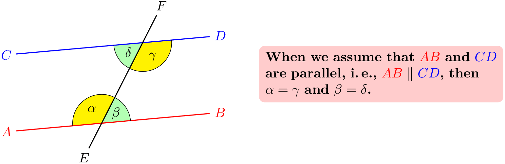

The TikZ and PGF Packages
Manual for version 3.1.9a
Part III TikZ ist kein Zeichenprogramm
by Till Tantau

\usetikzlibrary {angles,calc,quotes}
\begin{tikzpicture}[angle radius=.75cm]
\node (A) at
(-2,0) [red,left] {$A$};
\node (B) at
( 3,.5) [red,right] {$B$};
\node (C) at
(-2,2) [blue,left] {$C$};
\node (D) at
( 3,2.5) [blue,right] {$D$};
\node (E) at
(60:-5mm) [below] {$E$};
\node (F) at
(60:3.5cm) [above] {$F$};
\coordinate (X) at
(intersection cs:first line={(A)--(B)}, second
line={(E)--(F)});
\coordinate (Y) at
(intersection cs:first line={(C)--(D)}, second
line={(E)--(F)});
\path
(A) edge
[red, thick] (B)
(C) edge
[blue, thick] (D)
(E) edge
[thick] (F)
pic
["$\alpha$", draw, fill=yellow] {angle
=
F--X--A}
pic
["$\beta$", draw, fill=green!30] {angle
=
B--X--F}
pic
["$\gamma$", draw, fill=yellow] {angle
=
E--Y--D}
pic
["$\delta$", draw, fill=green!30] {angle
=
C--Y--E};
\node at
($ (D)!.5!(B) $) [right=1cm,text width=6cm,rounded corners,fill=red!20,inner sep=1ex]
{
When
we
assume
that
$\color{red}AB$
and
$\color{blue}CD$
are
parallel, i.\,e., ${\color{red}AB} \mathbin{\|} \color{blue}CD$,
then
$\alpha =
\gamma$
and
$\beta =
\delta$.
};
\end{tikzpicture}